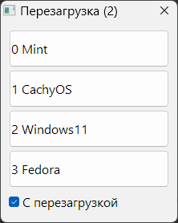

GrubDef
Назначение
Запускает выбранную ОС методом установки пункта по умолчанию в Grub2. Для этого создаётся файл доступный загрузчиком Grub2 из всех ОС, а команда source импортирует текст файла в конфигурационный файл grub.cfg.

Перед пунктами меню надо вставить вот такой код (в файл grub.cfg)
search --no-floppy --fs-uuid --set=partfile UUID_где_файл
source ${partfile}/b/bootdefitem/def
ini-файл
[set] - установки
widthBtn=200 - ширина кнопки
heightBtn=50 - высота кнопки
AlignsLeft=1 - выравнивание текста на кнопке влево
path=C:\b\bootdefitem\def - путь где будет флаг в файле def
shutdown=shutdown.exe - утилита для перезагрузки
arg=-r -t 0 - аргументы для утилиты перезагрузки
reboot=0 - флаг по умолчанию в GUI, отмечен - 1
confirmation=0 - выдавать ли сообщение о перезагрузке
forcelang=0 - принудительно включить язык 1 (английский) или 2 (русский), 0 - автоматически. Если рядом Lang.txt, то берётся из него, игнорируя другое.
[item] - пункты в меню Grub2, где 0 это верхний пункт, а "Mint" отображаемое имя на кнопке (повторить из меню Grub2)
0=Mint
1=CachyOS
2=Windows11
3=Fedora - для этого пункта надо добавлять в grub.cfg ещё одно условие и для последующих тоже (в идеале бы цикл сделать).